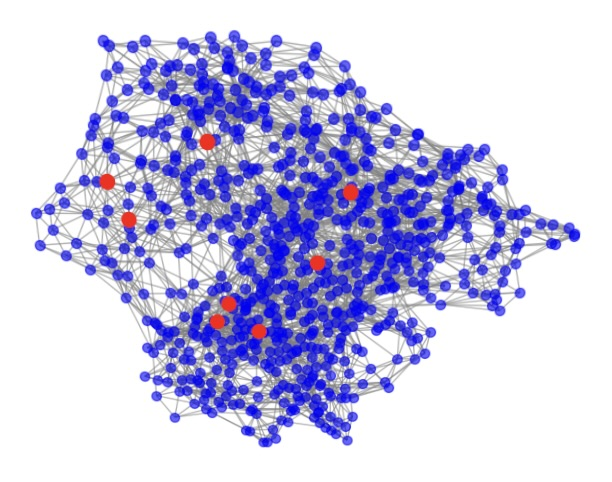
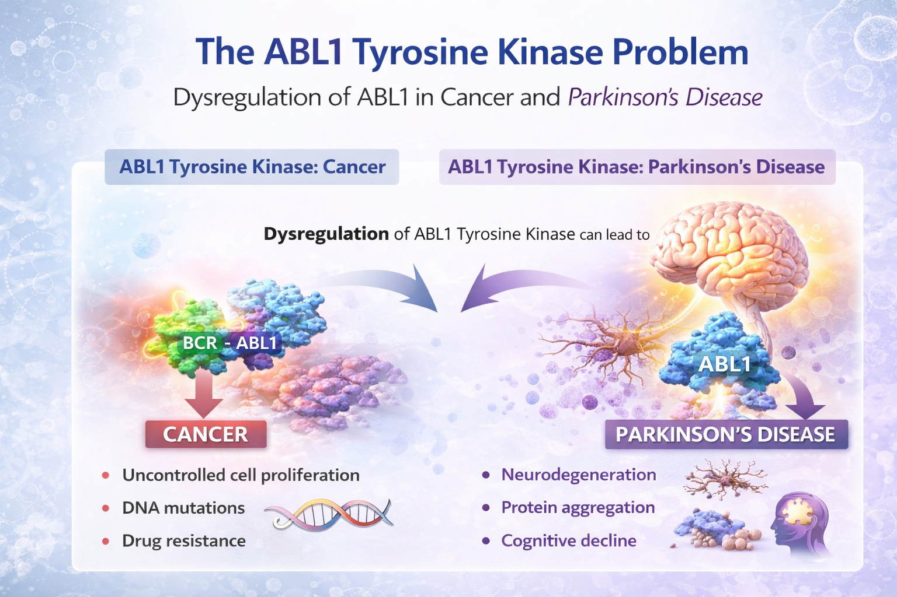
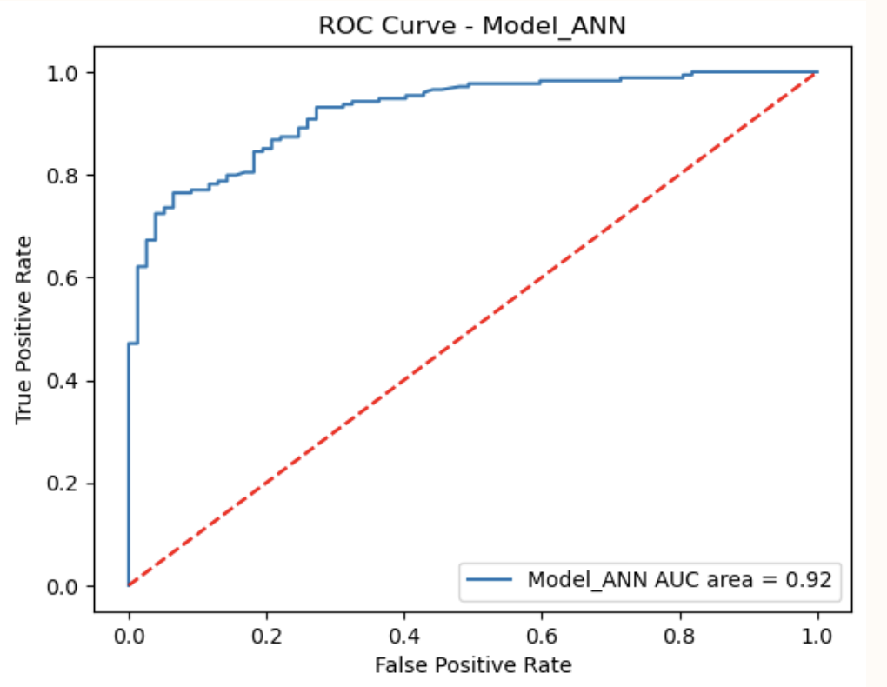

Research
A selection of projects and research interests in computational biophysics, biomolecular modelling, graph-based structural analysis, and computational approaches to molecular design.
Understanding the Structural Organization of Biomolecular Assemblies Using Graph-Theoretic Techniques

This work focuses on representing biomolecular systems as graphs in order to study structural organization, connectivity, and patterns of interaction in a systematic way. The broader aim is to uncover features of biomolecular assemblies that may not be immediately visible from raw structural coordinates alone.
Anti-cancer Drug Design: Targeting ABL1


This project explores computational approaches to targeting the ABL1 kinase in cancer. It combines molecular and structural considerations with machine learning-driven ideas from cheminformatics and computational drug discovery to study molecular features, interactions, and design strategies relevant to anti-cancer therapeutics.